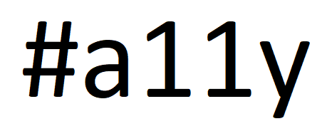

Accessibility Analysis
A Critical Analysis of the Airbnb Tech Blog and How it Could Improve to Make Tech Accessible for Everyone.
Project Overview
Challenge:
Something that is looked over in the tech industry is the accessibility of tech blogs and ways to learn about software engineering for persons with disabilities. These tech blogs are a way for software engineers to stay up to date on some of the most cutting edge projects happening at these large tech companies. Being employed by these tech companies like Airbnb is sought after and highly competitive.
Team:
A group of three User Experience students with the goal of improving usability and accessibility in the digital space.
The Process
What is the Goal?
To analyze and critique the content, purpose, and accessibility of the Airbnb Tech Blog. These blogs are a way for software engineers to stay up to date with what is going on in the industry and far too many times they are bogged down by unnecessary content. Even worse is the fact that many times these blogs are highly inaccessible and leave a portion of developers with disabilities left out. This analysis will identify the reasons this is on the Airbnb Tech Blog and how it could change.
What We Found
Accessibility
- Airbnb's home page does not have proper heading structure although it does start with a h1, which is a good start
- Not all page elements are contained in landmarks
- Alt text on open source projects are not descriptive. Each one is different and they have the same alt text. They should all be set to empty set.
- Links to not have names
- There is no skip link over repetitive content like the nav
- Each section the blog and the open source sections should be in lists so its easier to users to nav through both sections
What Airbnb Does Well:
- Heading structure for detailed project page
- Color Scheme (somewhat)
- Good use images along with text
- Colors contrast somewhat well
- Images and titles to help distinguish what each post is about
- Heading structure for detailed project page is great
What Airbnb Could Improve:
- Add proper heading structure on home page
- Add page elements that are not contained in landmarks
- Alt text on open source projects are not descriptive, each one is different and they have the same alt text. They should all be set to empty set.
- Links do not have names
- Add a skip link over repetitive content like the nav
- Each section the blog and the open source sections should be in lists so it's easier to users to nav through both sections
Opportunities:
- Airbnb's home page does not have proper heading structure although it does start with a h1, which is a good start
- Not all page elements are contained in landmarks
- Alt text on open source projects are not descriptive. Each one is different and they have the same alt text. They should all be set to empty set.
- Links to not have names
- There is no skip link over repetitive content like the nav
- Each section the blog and the open source sections should be in lists so it's easier to users to nav through both sections
What I Learned
- Analyzing a site goes far beyond taking a simple glance at the home page. To truly understand the structure and information architecture of a site there must be a deep dive into the code.
- With issues related to accessibility extra care must be taken. It is not enough to simply look up what makes a certain type of content accessible; the creator must empathize with their users and understand their needs on a personal level. 
- The most important factor to a teams success is effective communication. Only when there is an open dialogue can real positive change take place. This is true for any kind of project.


Deliverables
The final deliverable was a concise presentation for other UX practitioners to see what can be done to change accessibility issues.
Site Design and Build by Colton Almaraz